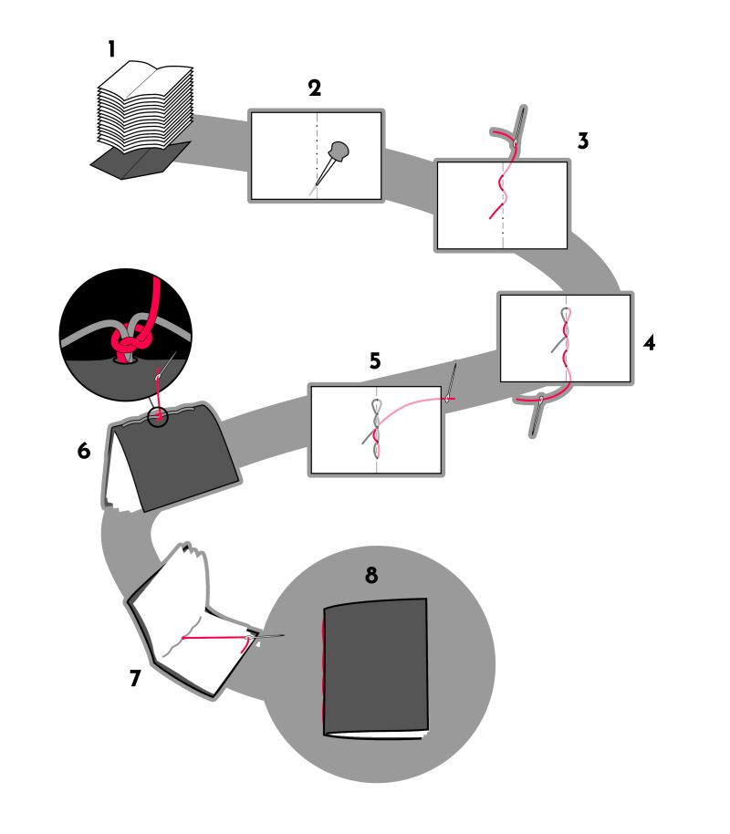

saddle stitch binding
Quick and easy. Go-to technique for single-signature notebooks.

- Fold ~15 sheets of paper in half and bundle them all together to form a signature. If using a cover, fold it in half and place it at the bottom
- Align all the sheets and, using an awl, punch five evenly spaced holes through all sheets at the centerfold
- Pass the needle through the center (3rd) hole, from the inside-out. Come back inside through the 2nd hole, and back out through the first.
- Continue sewing, going back down through the 2nd, 3rd, 4th and 5th holes
- Keep sewing, going back up and ending at the 3rd hole, on the outside of the book
- On the back of the spine, tie a knot around the stitches and pass the needle back through the center hole
- Finish by pulling the knot inside the book and cut the excess thread.
- Optional: Trim the excess paper using a utility knife
Note: this technique also works with more stitches, as long as you make an odd number of holes.